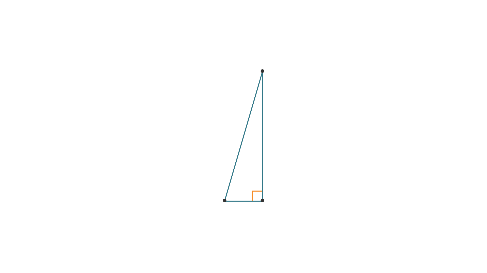

Consider this triangle.
25 in.
height =
24 in.
base =
7 in.
25 in.
height =
24 in.
base =
7 in.
Find the area of the triangle in square inches.
area - amount of space within a geometric figure
Strategy
When you need to find the area of a triangle, identify the base and the height.

Area of rectangle
=
(base)(height)
A
=
bh
A
=
(7 in.)
(24 in.)
A
=
168 in2
Area of triangle
=
(base)(height)
A
=
b
h
(7 in.)
(24 in.)
A
=
84 in2
84
Area of triangle
=
(base)(height)
A
=
84 in2
Check
Okay, so this problem is asking us to find the area of the triangle. So, this means we are being asked to find the amount of space within the triangle.
When you need to find the area of a triangle, identify the base and the height.We know that the height of a triangle forms a right angle with the base.
So, let’s start by looking for a right angle.This box indicates that the sides are perpendicular and form a right angle.
Either of the two sides that form a right angle can be the base or the height.
Let’s use the 7-inch side as the base.
So what do we do with the base and the height once we’ve found them?
Let’s take a minute to play with this triangle. If we copy it and move the copy around, we end up with a rectangle with the same base and height as our triangle!
We know the area of a rectangle is the base times the height.
We can see that our original triangle covers one-half the area of a rectangle with the same base and height.
This means that the area of our triangle is one-half the area of the rectangle.
Given this information, we can write a formula for the area of a triangle as one-half times base times height where b represents the base and h represents the height.
We chose to use the 7-inch side as the base and the 24-inch side as the height. So the area of the triangle is one-half of seven times twenty-four.
Now we can multiply. The product of 7 and 24 is 168. One-half of 168 is the same as dividing 168 by 2, which results in 84.
So the area of the triangle is 84 inches squared.
We can check our answer by using what we know about the area of a rectangle. Substitute the values of the base and the height of the rectangle into the formula.
Since we know that the area of a right triangle is one-half the area of a rectangle with the same base and height, we can divide the area of the rectangle, 168, by 2 to get 84.
The answers match, so the area of the right triangle is 84 square inches.